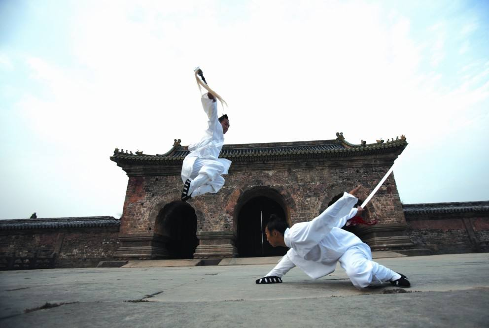

首页
文学
戏曲
节日
武术
饮食
联系我们
中国传统武术 Chinese Kung-fu
武术派别：
少林派
武当派
峨眉派
拳法：
少林拳
醉拳
咏春拳
螳螂拳
太极
虎鹤双形
少林派
少林派是中国武术中范围最广、历史最长、拳种最多的武术门派，以出于中岳嵩山少林寺而得名。 少林武术是在长期的僧众习武中逐渐自发形成的。 少林武技名显于世，始于隋末。
武当派
武当派创立于湖北省武当山，为内家之宗，起于元而兴于明。 据明末清初黄宗羲的《王征南墓志铭》，武当派为宋人张三丰所创。 其功法特点是强筋骨、运气功。强调内功修练，讲究以静制动，以柔克刚，以短胜长，以慢击快、以意运气，以气运身，偏于阴柔，主呼吸，用短手，武当功法不主进攻，然而亦不可轻易侵犯。一说之后的太极拳、八卦掌、形意拳等等内家拳均是从武当内家拳繁衍发展而成。

峨眉派
峨嵋派之得名，是以上古修仙学道圣地峨眉山而起的，它与洪门天地会之“峨眉山”不同，洪门的“峨眉山”是山堂而出于虚构，峨眉派的“峨眉”是地名，是实指。 峨眉武术有“一树开五花，五花八叶扶”。一树指的是峨眉武术，五花指的是五个地区，即丰都的青牛，通江的铁佛，开县的黄陵，涪陵的点易，灌县的青城。
少林拳
少林拳是中国传统拳种之一，得名于少林寺，是在中国古代健身术的基础上，吸收各种武艺之长而形成的拳术。作为一个最有影响的流派，以其刚健有力、朴实无华和利于技击而在国内外享有盛名。
醉拳
醉拳是模仿醉汉动作的一种传统拳术。这种拳打起来，很象是醉汉酒后跌跌撞撞，摇摇摆摆，但实际上是形醉意不醉，是由严格的武术手法、步法、身法等组成的套路，既有实用价值，又有很高的艺术性。醉拳中有“太白醉酒”、“武松醉跌”(即玉环醉步，鸳鸯脚）、“鲁智深醉打山门”、“醉八仙”等名称。醉拳根据其不同名称而组成不同形象、不同内容的套路，但都离不开醉形醉态的特点。醉拳由于其内容多跌扑滚翻动作，故又被认为是“地趟拳”的一种。醉拳是中华民族的优秀文化遗产之一，醉拳作为其中之一的精华流传了下来。
咏春拳
咏春拳是一门中国传统武术，是一门制止侵袭的技术，是一个积极、精简的正当防卫系统、合法使用武力的拳术。较其它中国传统武术、更专注于尽快制服对手、以此将当事人的损害降至最低。 咏春拳是以“中线理论”等理论基础为内容、而颇具特色的南拳拳术，强调使用正确的观念、意识及思维方式，来导出肢体的灵活应用；其内容主要包括“小念头”“寻桥”和“标指”等，主要练习方式为双人对练的“黐手”“黐脚”等；辅助器材有贴墙沙包、三星桩等；训练器械有木人桩、刀、棍等。
螳螂拳
螳螂拳是中国著名的中国传统武术流派之一，象形拳的一种。它是山东四大名拳之一，也是首批被国家体育总局武术运动管理中心列入系统研究整理的传统武术九大流派之一。 螳螂拳产生于明末清初，相传由明末清初抗清人士王郎（山东栖霞人于七）所创。 螳螂拳的形成发展，是凝聚了明末清初众多武术流派之长而成，仅依拳谱所载就有“十八家拳祖姓名”之说，可以说螳螂拳是中国古代武术文化的载体，研究这种拳术对于了解明清之际的武术有很大的帮助作用。
太极
太极拳，国家级非物质文化遗产， 是以中国传统儒、道哲学中的太极、阴阳辩证理念为核心思想，集颐养性情、强身健体、技击对抗等多种功能为一体，结合易学的阴阳五行之变化，中医经络学，古代的导引术和吐纳术形成的一种内外兼修、柔和、缓慢、轻灵、刚柔相济的中国传统拳术。
虎鹤双形
虎鹤双形拳是一种传统拳术，属于南拳之一。主要流传于广东，广西等地。相传为林世荣综合洪家拳和佛家拳改编而成，故有“洪头佛尾”之称。由于套路中既取虎的“劲”（如虎之猛）和“形”（如虎爪），又取鹤的“象”（如鹤嘴啄食）和“意”（如鹤的灵秀飘逸），所以叫虎鹤双形拳。